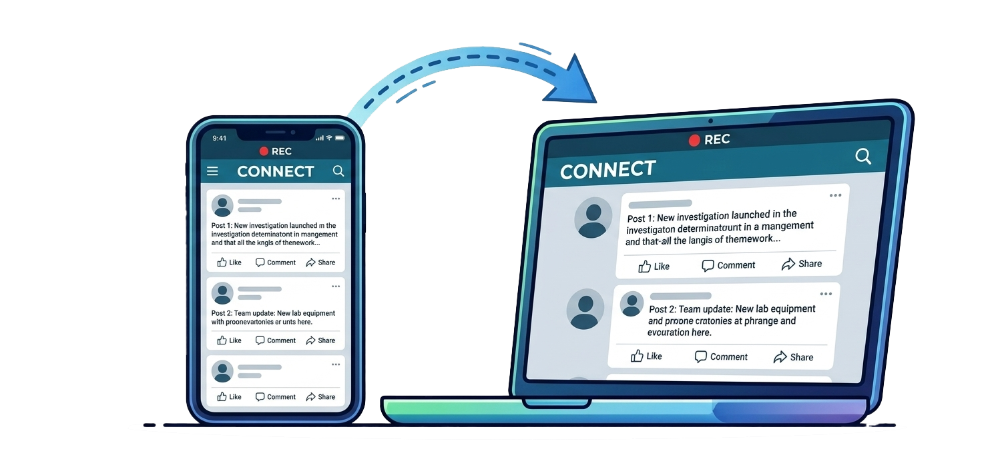
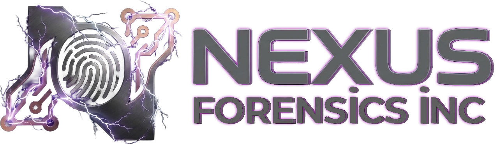
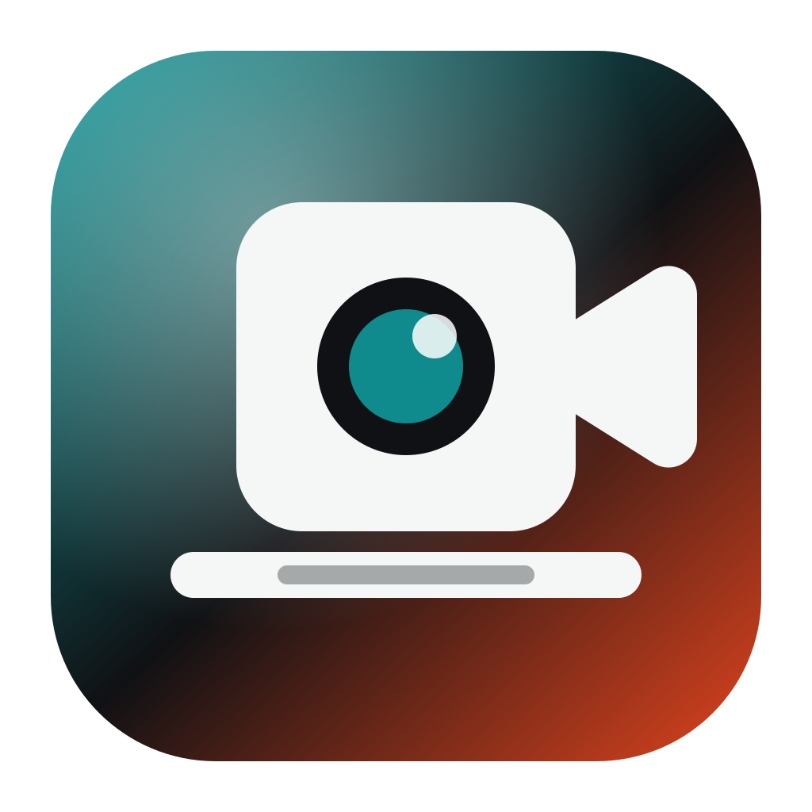
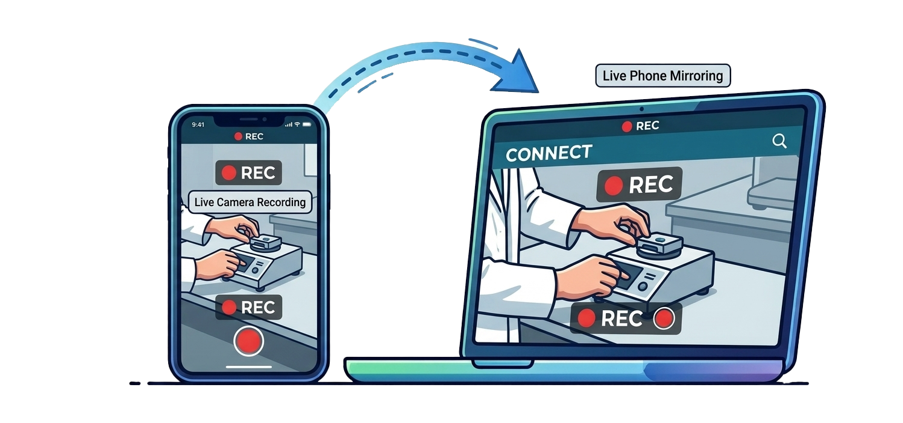

Record the phone screen
Capture mobile screen activity on the computer. Android can mirror by USB or wireless ADB, while iPhone USB capture uses guided QuickTime automation and a Lens Witness source picker.


Mobile Witness Recording
Record a phone camera feed, mobile screen activity, or phone gallery media on the computer. Lens Witness is available as a clean public recording tool and as Lens Witness Forensics for case-based evidence capture, audit logs, SHA-256 hashing, and agency reports.
Latest Features
Lens Witness now supports phone camera live view, Android screen mirroring, iPhone USB capture through QuickTime automation, device gallery imports, MP4 recording, audio capture, and a thumbnail capture library.

Capture mobile screen activity on the computer. Android can mirror by USB or wireless ADB, while iPhone USB capture uses guided QuickTime automation and a Lens Witness source picker.

Use iPhone or Android as a live camera source over local Wi-Fi or a trusted Cell/Data link. Take snapshots, record MP4 video with audio, and keep captures visible in a left-side thumbnail library.
Start each project by choosing Local Wi-Fi, Cell/Data, or iPhone USB. The active connection can be changed from the Lens Witness menu.
Lens Witness Forensics opens with case number, save path, investigator, agency, and agency logo fields, plus saved defaults and previous case access.
Browse Android media from the desktop, select multiple files, import selected files, and view them in list or gallery mode. iPhone users can import from the browser photo library.
Create reports with capture thumbnails, dates, times, device connection details, and SHA-256 hashes for imported media, snapshots, and recordings.
QuickTime setup masks the Mac camera preview with Lens Witness branding until the selected iPhone source is attached.
Open captures in the right pane, move through files with previous and next controls, and reveal saved media in Finder when needed.
Workflow
The public workflow stays simple for recording and importing. The forensics workflow adds case metadata, device connection logs, SHA-256 hashing, and report output for evidentiary use.
Choose the save location and connection type before the phone source starts.
Use Local Wi-Fi, Cell/Data, Android USB or wireless mirror, or iPhone USB with QuickTime setup.
Capture MP4 video with audio or take still images from the active live view.
Bring in phone gallery photos and videos, then review captures from the thumbnail library.
Create a simple public summary or a forensic report with logs, device details, and hashes.
Editions And Pricing
Lens Witness is priced as a practical public recording tool. Lens Witness Forensics adds the case structure and defensibility needed by investigators, agencies, and legal teams.
For creators, educators, consultants, support teams, and everyday users who need a clean way to record a phone camera or phone screen on the computer.
For investigators, law enforcement, legal support, and forensic teams that need mobile capture tied to case metadata, reports, and reviewable audit detail.
Forensics Difference
Lens Witness Forensics adds case headers, agency identity, device connection logging, SHA-256 hashes, and a report that explains what was captured, when it was captured, and where it was saved.
Lens Witness starts at $199 per user per year. Lens Witness Forensics adds case reporting, audit logs, and SHA-256 hashes at $599 per user per year.